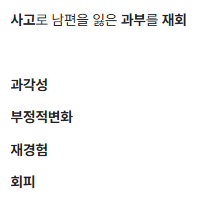

22. 불안
원인 | ||
정상적인 불안 및 급성스트레스반응 | 적응장애 | |
불안장애, 외상 및 스트레스 관련 장애 | 특정 공포증 / 광장 공포증 / 사회불안장애 / 범불안장애 공황장애 PTSD (외상 후 스트레스 장애) | |
신체질환으로 유도된 불안 | 천식 갑상샘항진증/갑상샘저하증, 크롬친화세포종 부정맥 뇌전증 | |
물질사용으로 유도된 불안 | 약물 금단 | |
다른 정신질환에서의 불안 | 강박장애 | |
평가목표 1) 정상적인 불안과 병적인 불안을 구별하며 불안을 일으키는 원인을 파악 2) 불안장애 또는 외상 및 스트레스 관련 장애의 진단 및 치료 계획을 수립 | ||
구체적인 성과 | ||
병력 청취
| 정상적인 불안과 병적인 불안을 구별 | 기간/빈도: 언제부터, 어떤 상황에서, 특별한 사건 정도: 일상생활(학업, 대인관계)에 지장을 줄 정도의 지속성 확인 고통의 정도: 죽고 싶은 생각도 드는지 |
| 불안장애별로 불안의 특성과 유발요인을 확인 | 적응 장애: 최근 직업이 바뀌지 않았는지, 스트레스 특정 공포증: 특정 물건에 대한 두려움/공포감 광장 공포증: 넓고 사람 많은 장소/밀폐되고 혼자인 장소 사회불안:남들 앞(발표 등)에서 창피를 당할 것 같은 두려움 범불안: 6개월 이상 사소한 일에도 지속되는 걱정 공황: 갑작스런 죽을 것 같은 공포(공황발작), 예기불안 PTSD: 재경험(반복적, 침습적 기억, 악몽, 심리적 고통) 회피(기억, 생각, 감정을 피하려는 노력, 장소를 피함) 부정적 변화(우울, 불안, 비난, 부정적 믿음) 과각성(수면 교란, 민감, 분노, 집중의 문제) 강박장애: 생각/행동 강박 |
| 불안에 동반되는 다양한 신체증상을 확인
| 순환기:두근거림, 식은땀, 호흡곤란, 손떨림 천식: 쌕쌕거림 갑상선: 더위불내성, 체중 감소 뇌전증/신경계: 두통, 어지럼증, 경련 |
| 다른 정신질환이나 물질사용장애 또는 신체질환에 의한 불안을 구별 | 정신증: 환각/환청 자살: 자살 사고/계획/시도 물질: 카페인 과다 섭취, 약물 금단, 마약 |
신체 진찰 | 정신상태를 평가
| 외양/태도: 눈맞춤이 힘듦, 안절부절못함 언어/사고: 말이 빠르고 떨림, 불안한 사고 내용 확인 |
| 신체질환이나 물질사용에 의한 불안을 감별
| 눈: 안구 돌출 확인 갑상샘: 갑상샘 비대 촉진 손:미세한 손떨림(Fine tremor) 확인 흉부: 심음 청진(빈맥, 부정맥 확인) / 호흡 시청타촉 + 복부 (크롬친화세포종 의심 시) |
진단 | 불안을 확인할 수 있는 평가척도(심리검사)를 의뢰 | 불안 척도 검사: BAI (Beck Anxiety Inventory), GAD-7 등 심리검사 시행 |
| 신체질환이나 물질사용에 의한 불안의 감별을 위한 진단계획을 수립 | 혈액검사: TFT(갑상샘 기능), 전해질, CBC 부정맥: 심전도 |
치료 | 환자를 안심시키고 격려 | "불안은 조절 가능한 질환이며, 환자분이 약해서 생기는 것이 아닙니다." |
| 원인에 따른 치료계획을 수립
| 정상적인 불안 및 스트레스: 단기 정신 치료, 인지행동 치료, 심한 경우 항불안제 불안장애, 외상 및 스트레스 관련 장애: 항불안제, 인지행동 치료 신체질환으로 유도된 불안: 천식, 갑상샘항진증/갑상샘저하증, 크롬친화세포종, 부정맥, 뇌전증 물질사용으로 유도된 불안 |
| 급성기의 증상완화를 위한 약물치료와 정신치료계획을 수립 | 항불안제: 초기 증상 조절을 위한 BZD, 장기 치료를 위한 SSRI 처방 정신치료:인지행동치료(CBT), 이완 요법(복식호흡 등) 안내 |
환자교육 | 원인에 따른 치료의 개요를 쉽게 설명
| 기질적 원인에 대한 검사 및 치료도 안내 |
| 불안의 치료원칙에 대해 환자를 교육
| 뇌의 신경전달물질 불균형을 바로잡는 과정임을 쉽게 설명 증상이 호전되어도 임의로 약을 끊지 않도록 교육 (임의 중단 시 재발 가능, 효과가 나타나기까지 꾸준히 약을 복용하는 것이 중요) 대개 만성화되기 쉬우므로 장기간 치료가 필요한 경우가 많음 |
| 항불안제 및 수면-진정제의 남용을 유의
| BZD: 의존성 및 내성 위험성 설명 (단기간 사용 원칙) 카페인:교감신경을 자극해 불안을 악화시키므로 되도록 끊기 술, 담배 줄이기 |
질환 | 질환 설명 | 병력청취 | 검사/치료 | |
급성 스트레스 반응 | 적응장애 2+1 | 스트레스 상황에 잘 적응하지 못함 | 알 수 있는 정신/사회적 스트레스가 작용한 지 3개월 이내에 부적합한 적응 반응 3mo 이내 사건 | 단기 정신 치료, 인지 행동 치료, 대인 관계 치료 불안 심한 경우 BZD |
| 급성 스트레스 장애 |
| 3d~1mo 증상 |
|
불안장애, PTSD, 다른 정신질환 | 특정 공포증 |
| 1mo+ 증상 |
|
| 광장공포증 | 발작이 생기면 도망치기 어려운 장소가 두려워 불안 발생 | 공황 발작이나 유사 증상이 생긴 경우 도움을 받기 어려운 장소에 있는 것 불안해 함 | SSRI 인지 행동 치료 |
| 사회불안장애 1+1 | 사람들 앞에서 실수하거나 평가받을까 두려워 불안 | 사회적 활동에 대한 어려움, 사회적 상황에 처하면 항상 불안 유발 | BB (불안할 때 마다) SSRI, BDZ 인지 행동 치료, 집단 치료 |
| 범불안장애 | 특별한 이유 없이 일상 전반에 대해 과도한 불안 지속 | 스스로 조절이 안 되는 지나친 걱정과 불안 증상이 6 개월 이상 지속, 수면장애, 안절부절 못함, 피로감, 근육의 긴장 | SSRI,. buspirone, BDZ 인지 행동 치료 (이완, 바이오피드백) |
| 공황장애 1+1 | 갑자기 심장이 두근거리고 숨이 막히는 발작 | 반복적이고 예기치 못한 공황 발작, 예기불안/발작에 대한 근심/행동 변화 | BDZ (급성), SSRI (만성) 인지 행동 치료 |
| PTSD 1+1 | 사고나 외상을 떠올리면 다시 겪는 느낌 | 1개월 이상 (이하면 급성 스트레스 장애), 자신, 타인의 죽음, 신체 손상 등 경험/직면, 극심한 공포, 무력감, 과각성/재경험(악몽)/회피 | SSRI 인지 행동 치료 (지속 노출 치료, 인지처리 치료, 안구 운동 탈민감재처리) |
| 강박장애 | 억지로 떠오르는 생각과 반복 행동 때문 | 강박 사고나 강박 행동, 생활에 지장을 줌 | SSRI 행동 치료 (노출과 반응 방지, 탈감작, 사고 중지) |
신체질환 | 부정맥 | 심장이 불규칙하게 뛰어 생명 위협 불안 | 두근거림, 심장쿵, 맥박 측정 | 심전도, 홀터 모니터 항부정맥제 |
| 천식 | 숨 막힘+호흡 곤란이 생겨 죽을까 불안 | 쌕쌕거림, 기침, 호흡곤란, 계절성 흉부 진찰 쌕쌕거림 | PFT, 메타콜린 자극 유발검사 기관지 확장제, ICS |
| 갑상샘기증항진/저하 | 호르몬이 과다해 심장이 두근거리고 예민 | 체중감소/증가, 더위/추위 불내성, 두근거림 | TFT 약물치료 |
| 크롬친화세포종 | 아드레날린이 과다 분비되어 혈압 증가, 불안 | 두통, 안면홍조, 식은땀, 두근거림 복부촉진 | 소변검사, 복부 CT 약물 치료, 수술 |
| 뇌전증 | 발작 전후로 뇌가 과흥분해 불안/두려움 | 발작, 전조 증상, 이전 뇌손상력 | EEG, 뇌 MRI 항뇌전증제 |
물질 사용 | 약물 금단 | 술·약을 끊으면서 신체가 흥분해 불안 | 약물 남용 병력 | 약물 중단, 급성 치료 |
| 비밀보장! | ||
O | 언제 / 갑자기 당시 어떤 상황 특별한 사고나 사건? | ||
L | - | ||
D | 얼마나 지속 / 얼마나 자주 | ||
Co | 처음보다 심해지나요? | ||
Ex | 이전 경험 – 치료 | ||
C | 전->중->후 상황) 불안감이 시작되는 상황 양상) 불안 시 드는 생각 정도) 일상생활에 지장 (-> 공감PPI)
병전 성격 (Character) | ||
A | 우울한 순천갑 특광 강사 환자 공범 (우울/순환기/천식/갑상선/특정/광장/강박/사회/환각/자살/공황/범불안) 기분) 지금 기분, 우울/수면 특정 공포증) 특정 물건에 대한 두려움/공포감 광장 공포증) 넓고 사람 많은 장소/밀폐되고 혼자인 장소 사회불안) 남들 앞(발표 등)에서 창피를 당할 것 같은 두려움 범불안) 6개월 이상 사소한 일에도 지속되는 걱정 “사소한 일에도 걱정이 많으신가요?” 공황) 갑작스런 죽을 것 같은 공포(공황발작), 예기불안 적응 장애) 3mo 이내 사건 최근 직업이 바뀌지 않았는지, 스트레스  PTSD) 증상 1mo + 재경험(반복적, 침습적 기억, 악몽, 심리적 고통) -”그때 당시의 기억이 계속해서 떠오르진 않나요?” 회피(기억, 생각, 감정을 피하려는 노력, 장소를 피함)- ”그 사건이 있었더 장소를 피하시나요?” 부정적 변화(우울, 불안, 비난, 부정적 믿음) -”그때 이후로 우울하거나 불안하신가요” 과각성(수면 교란, 민감, 분노, 집중의 문제) -”작은 소리에도 깜짝깜짝 놀라거나 하진 않으세요” 강박장애) 생각/행동 강박 정신증) 환각/환청 자살) 자살 사고/계획/시도 순환기, 크롬) 두근거림, 식은땀, 호흡곤란, 손떨림 천식) 쌕쌕거림 갑상선) 더위불내성, 체중 감소 뇌전증/신경계) 두통, 어지럼증, 경련 | ||
F | 심해지거나 나아지는 상황 | ||
E | 마지막 건강검진? | ||
과 | 현재 앓고 계신 질환이 있나요? 기본 : 고혈압/당뇨/고지혈증/결핵 정신 질환 진단 | ||
외 | 수술받은 적이 있나요? | ||
약 | 복용중인 약물? 최근에 중단한 약물/대마초나 마약 | ||
사 | 기본 : 음주/흡연/커피/직업/스트레스 카페인) 커피는 하루에 얼마나 드세요? 녹차나 다른 카페인? | ||
가 | 비슷한 증상/정신건강의학과 진료 | ||
여 | 규칙적, 월경량 변화 | ||
PEx | 동의 구하기 손 씻기 | ||
| 기본 | V/S 확인 (혈압, 맥박, 호흡수, 체온) 1 눈: 빈혈 2 입: 탈수 3 목: 경부 림프절 + 갑상샘 4 손: 맥박 촉진 (알코올 의심되면 flapping tremor) 5 사지 : 피부 긴장도, 다리부종 | |
| 흉부 + 복부 | 흉부 청진 <<<<이거 꼭 해야되나요???@김준철 청진만 하시면 될거 같아요 ㅋㅋㅋㅋㅋ 심음 청진
+ 크롬친화세포종 의심될 경우 복부진찰 | |
| 협조해주셔서 감사합니다. 불편한 건 없으셨나요? 손씻기 | ||
| 기본!!
| 우울척도검사 (Becks) + 신경심리검사 심전도 혈액검사 (갑상선검사) | 인지행동치료 (불안을 키우는 잘못된 생각을 바로잡고 + 두려운 상황을 단계적으로 연습하며 불안 줄이기) 신경안정제(급성) + 항불안제(만성) |
| 적응장애 |
| 집단치료, 단기정신치료 |
| 특정공포증 |
| 인지행동치료(체계적 탈감작) = 1st choice |
| 광장공포증 |
| 인지행동치료 |
| 사회불안장애 |
| BB (수행상황 1시간 전), 인지행동치료 = 1st choice |
| 범불안장애 |
| Buspirone + BDZ를 함께 쓰다가 BDZ 감량 인지행동치료 |
| 공황장애 |
| 급성 발작 시 BDZ/예기불안 시 CDZ + 항불안제 인지행동치료 (공황장애와 연관 x, 생명에 위협 x) |
| PTSD |
| 외상 직후 단기간 위기 개입 SSRI 인지행동치료(안구 운동 탈민감재처리) |
| 신체질환 | 원인 질환에 따른 검사 | 원인 질환에 따른 치료 |
교육 | 생활습관 교정 (안심/응급/술담커식운수스/검진접종) [안심] "불안은 조절 가능한 질환이며, 환자분이 약해서 생기는 것이 아닙니다." [응급] [회피, 교정]
약물 교육 불안 장애는 대개 만성화 되기 쉬움 -> 항불안제를 6개월 이상 복용 해야 하며 임의로 끊거나 하면 오히려 치료가 어려워 질 수 있음 효과 나타날때까지 꾸준히 복용해야 하며 약물로 조절 후 점차 감량하며 이후 장기적 조절 시 끊을 수 있음
+ 약물 부작용으로 입마름, 변비, 불면, 성기능 장애 / 부작용이 나타나면 병원에 와서 약물 조절 + 항불안제 남용 시 과민해지고 오히려 불안해질 수 있음
[항우울제] 항우울제는 감기약처럼 바로 효과가 나타나지 않습니다. 보통 2~4주 정도 꾸준히 복용해야 기분이 개선되기 시작하니 조급해하지 마세요. 증상이 조금 좋아졌다고 바로 끊으면 재발 위험이 큽니다. 최소 6개월 이상 지속적으로 약물을 복용하시는 것이 중요하며, 반드시 주치의와 상의해서 용량을 조절해야 합니다. 초기에 입 마름이나 약간의 속 쓰림이 있을 수 있지만, 대개 시간이 지나면 적응됩니다.
카페인 카페인은 교감신경을 자극해 불안을 악화시킬 수 있기 때문에 되도록 끊는 것이 좋음 (녹차, 커피 등)
<질환별 교육> 우리 몸에는 흥분을 담당하는 '교감신경'과 안정을 담당하는 '부교감신경'이 있습니다. 지금은 교감신경이라는 가속 페달이 너무 세게 밟혀서 심장이 빨리 뛰고 땀이 나는 것이지요.
공황장애 공황발작의 죽음의 공포가 실제 신체적인 죽음으로 이어지지 않음. 오작동하는 알람이다. 탓이 아닙니다. "우리 몸이 호랑이를 만났을 때처럼 싸우거나 도망가기 위해 준비하는 과정에서 심장이 빨리 뛰고 숨이 가빠지는 것입니다. 다만 지금은 호랑이가 없는데 몸이 착각을 한 것이지요." 발작이 올 것 같을 때 "숨을 들이마실 때 배를 풍선처럼 부풀리고, 내뱉을 때 천천히 꺼뜨려 보세요. 코로 4초간 들이마시고, 입으로 6초간 아주 천천히 내뱉는 것이 핵심입니다." "주먹을 꽉 쥐었다가 서서히 힘을 빼며 근육의 긴장이 풀리는 것을 느껴보세요."
PTSD "지금 겪으시는 증상들은 ○○○ 님이 약해서 생기는 것이 아닙니다. 몸에 큰 상처가 나면 흉터가 남듯, 감당하기 힘든 '비정상적인 상황'을 겪은 뒤 마음의 회로에 일시적인 과부하가 걸린 상태입니다." 우리 뇌에는 위험을 감지하는 '편도체'라는 경보기가 있습니다. 큰 사건 이후 이 경보기가 너무 예민해져서, 지금은 안전한 상황임에도 자꾸 '위험하다'고 엉뚱한 신호를 보내는 것입니다. 저희는 이 경보기를 다시 안정시키는 과정을 함께 할 것입니다
생리적 불안/적응장애 "지금 느끼시는 두근거림이나 손떨림은 우리 몸이 위험에 대비하기 위해 에너지를 모으는 정상적인 생존 반응입니다. 시험 전이나 발표 전에 긴장되는 것과 같은 원리이지요." "다만 현재는 특별한 위험이 없는데도 이 장치가 너무 예민하게 작동하여 ○○○ 님을 힘들게 하고 있는 상태입니다."
| ||
PPI | 궁금하신 점 있으실까요? | ||